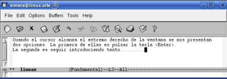
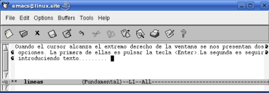
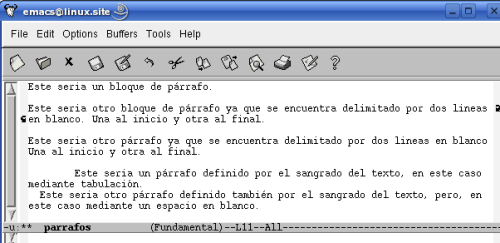

3.Lineas y Párrafos
Pág.Anterior | Índice | Pág.Siguente
Vamos a comenzar este capítulo definiendo dos conceptos esenciales en las tareas de edición. Se trata de los conceptos lineas de texto y párrafo.
3.1.Lineas
Pág.Anterior | Índice | Inicio Página | Pág.Siguente
A medida que vamos introduciendo texto en la zona de edición, Emacs lo va "colocando" en una linea que va alargándose, siguiendo el cursor, de izquierda a derecha.
Cuando el cursor alcanza el extremo derecho de la ventana, se nos presentan dos opciones:
La primera sería pulsar <Enter>. El nuevo texto que vayamos entrando se situará en una nueva linea, debajo de la anterior. En la linea de modo podemos observar como ha cambiado el indicador del número de linea.
Se ha producido un salto de linea real
La segunda opción que tenemos es seguir introduciendo texto. Emacs situará el nuevo texto que vayamos entrando en una nueva linea, pero, también, intercalará una flecha curva al final de la linea y al principio de la siguiente. Esta segunda linea es, en realidad,una "linea aparente", continuación de la anterior. Para Emacs todo el texto se encuentra en una misma linea. Si observamos el indicador del número de linea veremos como no ha cambiado.
No se ha producido un salto de linea real
Veamos grágicamente estas dos opciones:
En este primer ejemplo, hemos provocado dos saltos de línea ,con <Enter>, uno después de cada punto.
Como podemos observar, el cursor se encuentra en la linea tres (L3)
|  |
El mismo texto tecleado sin provocar ningún salto de linea real.
Podemos observar las flechas curvas, al final y al principio de cada "linea aparente", así como la posición del cursor indicada en la línea de modo: (L1)
|  |
3.2.Párrafos
Pág.Anterior | Índice | Inicio Página | Pág.Siguente
El otro concepto a definir es el de Párrafo
Cuando se opera en modo texto, Emacs considerará como párrafo a todo texto situado entre dos lineas en blanco o "sangrado".
A veces puede ser engorroso ir delimitando los párrafos mediante lineas en blanco. Cambiando al modo mayor paragraph-indent-text-mode, cada linea que comience con un espacio en blanco será considerada un párrafo. Cuando se opera en este modo, en la linea de modo aparece Parindent.
En este ejemplo podemos ver cinco párrafos. Los tres primeros delimitados mediante lineas en blanco y los dos últimos mediante sangrado.
|  |
3.3.Formateado del texto
Pág.Anterior | Índice | Inicio Página | Pág.Siguente
Para las tareas de formateado de texto podemos utilizar los siguientes modos menores:
auto-fill-mode: Emacs formatea los párrafos a medida que se van introduciendo. Cuando se encuentra activo, en la linea de modo aparece: (Fill)
refill-mode: Emacs, automáticamente, reformatea texto.Cuando se encuentra activo, en la linea de modo aparece: (Refill)
La activación ya la desactivación de estos modos se realiza como ya se trató en Modos [III.iv].
El modo auto-fill-mode puede activarse/desactivarse através de la siguiente opción de menú: Options-->Word Wrap in Text modes.
Cuando estamos operando con Refill y deseamos activar Fill, deberemos tener la precaución de desactivar el primero antes de activar el segundo, ya que de lo contrario Refill seguirá actuando, ignorando la activación de Fill.
3.4.Reformateado de Párrafos
Pág.Anterior | Índice | Inicio Página | Pág.Siguente
Hemos dicho que auto-fill-mode formatea automaticamente los párrafos a medida que se van tecleando. Sin embargo, al editarlos no los reformatea.
Para reformatear párrafos disponemos de dos comandos:
- Comando : M-q.
- Comando "largo" : M-x fill-paragraph <Enter>.
- No ejecutable desde menú.
- Reformatea párrafos individuales. Para reformatear un párrafo, situar el cursor en el y ejecutar el comando.
- Comando "largo"M-x fill-region <Enter>
- Opción de menú : Edit-->Fill.
- No tiene combinación de teclas asociada.
- Reformatea párrafos individuales contenidos en una determinada región (selección) [5.4] del texto. Para ello, marcar la región [5.4] y ejecutar el comando.